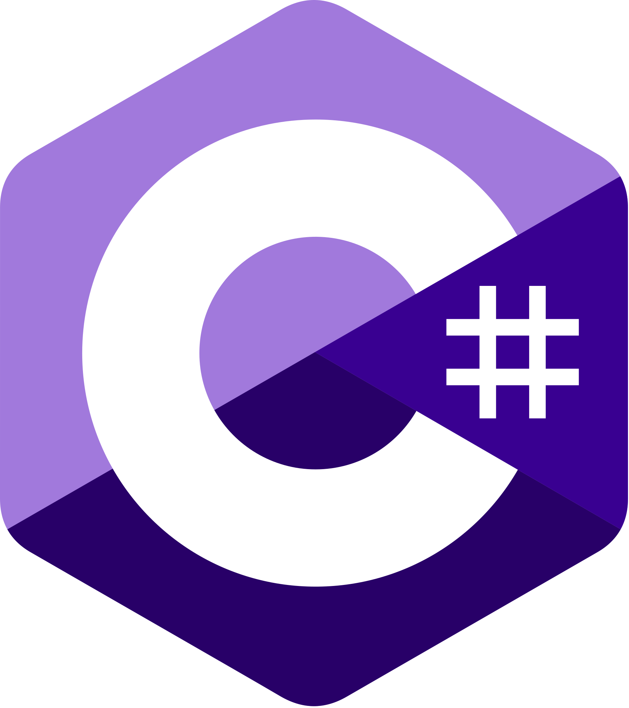
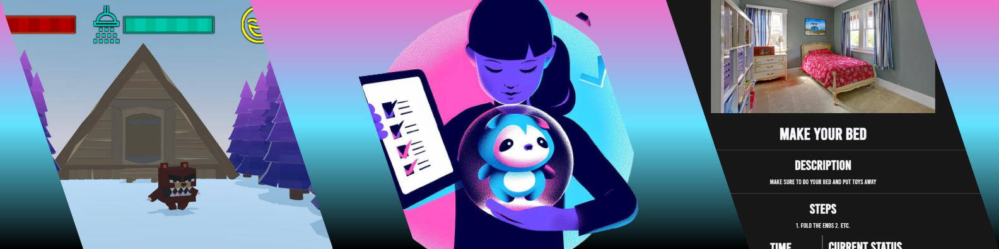

Technologies




Design and develop Tasko, an intuitive task management app originally aimed at children with autism, later expanded for all children. The goal was to create a system where children earned game access by completing tasks. This required user-friendly design, clear visuals, simple navigation, and robust security measures. As Tasko evolved, the app needed to scale effectively while maintaining its engaging reward system and ensuring privacy and safety for users.
To address these challenges, I implemented a structured and iterative development process, focusing on the following key solutions.
